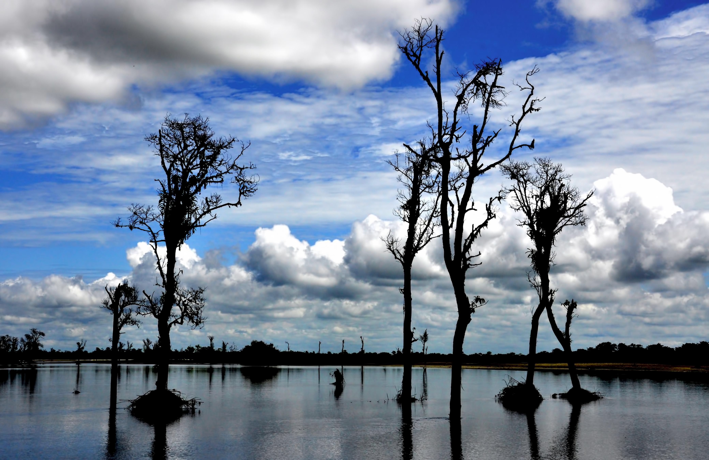

thumb_up
0
thumb_down
0
 Kaziranga National Park in Assam is one of the top National Parks in East India, which is especially famous for housing one-horned Rhinoceros.
Rich in flora and fauna, Kaziranga National Park is the best place for wildlife enthusiasts as they can find animals like wild water buffalo, Asiatic elephants, leopards, Royal Bengal Tigers, and varied species of migratory birds.
The fluctuations of the Brahmaputra River result in spectacular examples of riverine and fluvial processes in this vast area of wet alluvial tall grassland interspersed with numerous broad shallow pools fringed with reeds and patches of deciduous to semi-evergreen woodlands.
Kaziranga National Park in Assam is one of the top National Parks in East India, which is especially famous for housing one-horned Rhinoceros.
Rich in flora and fauna, Kaziranga National Park is the best place for wildlife enthusiasts as they can find animals like wild water buffalo, Asiatic elephants, leopards, Royal Bengal Tigers, and varied species of migratory birds.
The fluctuations of the Brahmaputra River result in spectacular examples of riverine and fluvial processes in this vast area of wet alluvial tall grassland interspersed with numerous broad shallow pools fringed with reeds and patches of deciduous to semi-evergreen woodlands.
Named after Dr. D. Ering, Daying Ering Wildlife Sanctuary is located in Arunachal Pradesh and home to several migratory birds. It has large water bodies; thus, migratory birds from Mongolia and Siberia are often seen here. It is home to two of the great cats-the Tiger and the Leopard. Here you will find the endangered Takin, Hoolock Gibbon, Red Panda, Slow Lories and Capped Langur. Apart from these animals, wild buffaloes, wild elephants, Hog Deer etc. are found here in abundance. The Sanctuary is home to a species of resident birds and a haven to different species of migrating birds.
 Dibru Saikhowa National Park, situated in Assam, is a river Island national park where you can find many endangered species of flora and fauna. The national park is divided into seven parts, of which only one is a wetland, and the rest six parts are covered in grasslands as well as dense forests. Some of the animals and birds that can be seen here include royal Bengal tiger, hoolock gibbons and leopards, white-winged Wood Duck, lesser adjutant stork, spotted-billed Pelican, jerdon’s babbler, white-bellied Heron, black-breasted parrotbill, pallas’s fish eagle, swamp partridge, Bengal florican, and striated grassbird, etc.
 Sundarbans is one of the most prominent tourist attractions in West Bengal.
Here you can find the largest mangrove forests in the world. One of the biggest attractions of Sundarbans is the largest number of royal Bengal tigers.
Apart from the royal Bengal tigers, you will also be able to find salt-water crocodiles, wide varieties of reptiles and birds here.
Sundarbans is one of the most prominent tourist attractions in West Bengal.
Here you can find the largest mangrove forests in the world. One of the biggest attractions of Sundarbans is the largest number of royal Bengal tigers.
Apart from the royal Bengal tigers, you will also be able to find salt-water crocodiles, wide varieties of reptiles and birds here.